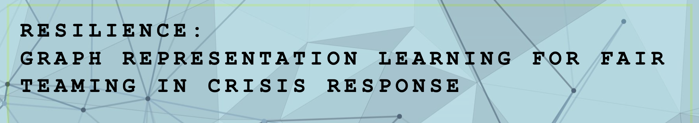

The recent COVID-19 pandemic has revealed the fragility of humankind. In our highly connected world, infectious disease can swiftly transform into worldwide epidemics. A plague can rewrite history and science can limit the damage. The significance of teamwork in science has been extensively studied in the science of science literature using transdisciplinary studies to analyze the mechanisms underlying broad scientific activities. How can scientific communities rapidly form teams to best respond to pandemic crises? Artificial intelligence (AI) models have been proposed to recommend scientific collaboration, especially for those with complementary knowledge or skills. But issues related to fairness in teaming, especially how to balance group fairness and individual fairness remain challenging. Thus, developing fair AI models for recommending teams is critical for an equal and inclusive working environment. Such a need could be pivotal in the next pandemic crisis. This project will develop a decision support system to strengthen the US-Australia public health response to infectious disease outbreak. The system will help to rapidly form global scientific teams with fair teaming solutions for infectious disease control, diagnosis, and treatment. The project will include participation of underrepresented groups (Indigenous Australians and Hispanic Americans) and will provide fair teaming solutions in broad working and recruiting scenarios. This project aims to understand how scientific communities have responded to historical pandemic crises and how to best respond in the future to provide fair teaming solutions for new infectious disease crises. The project will develop a set of graph representation learning methods for fair teaming recommendation in crisis response through: 1) biomedical knowledge graph construction and learning, with novel models for emerging bio-entity extraction, relationship discovery, and fair graph representation learning for sensitive demographical attributes; 2) the recognition of fairness and the determinant of team success, with a subgraph contrastive learning-based prediction model for identifying core team units and considering trade-offs between fairness and team performance; and 3) learning to recommend fairly, with a measurement of graph-based maximum mean discrepancy, a meta learning method for fair graph representation learning, and a reinforcement learning-based search method for fair teaming recommendation. The project will support cross-disciplinary curriculum development by effectively bridging gaps in responsible AI and team science, fair project management, and risk management in science. This is a joint project between researchers from the United States and Australia and funded by the Collaboration Opportunities in Responsible and Equitable AI under the U.S. NSF and the Australian Commonwealth Scientific and Industrial Research Organisation (CSIRO). This award reflects NSF's statutory mission and has been deemed worthy of support through evaluation using the Foundation's intellectual merit and broader impacts review criteria.
Yizhou Sun The lead PI Yizhou Sun is an Associate Professor at Computer Science, University of California, Los Angeles (UCLA). Her principal research interest is on mining graphs/networks, and more generally in data mining, machine learning, and network science, with a focus on modeling novel problems and proposing scalable algorithms for large-scale, real-world applications. She is a pioneer researcher in mining heterogeneous information networks, with a recent focus on deep representation learning on graphs. Her work has been widely applied to healthcare domain, including COVID-19 related predictions. Her >180 publications have attracted >14,000 citations with an h index of 54 in Google Scholar. She is a recipient of SIGKDD dissertation award, NSF career award, and VLDB test of time award.
Ying Ding Co-PI Ying Ding is a Bill & Lewis Suit Professor at School of Information, University of Texas at Austin (UT at Austin), with long-term commitments to science of science, bibliometrics, semantic web, and data science. She has >20 years of experiences in citation analysis, scientific collaboration, and bibliometrics in general. She has published >250 articles in leading journals, conferences and workshops. She runs the AI in Health initiative at School of Information and Dell Medical School with the focus on mining large scale medical literature to understand team science, novelty, and knowledge diffusion, and building knowledge graphs to integrate patient data for evidence-based care, precision health, and risk management.
Dr Yi Zhang, the lead Australian personnel of the team, is a Senior Lecturer at the Australian Artificial Intelligence Institute (AAII), University of Technology Sydney (UTS) and an awardee of the Australian Research Council (ARC)’s Discovery Early Career Research Award (DECRA). His research highlights a novel direction called intelligent bibliometrics, emphasizing the development of computational models incorporating artificial intelligence techniques with bibliometric indicators, with a specific focus on science, technology, and innovation studies. As an Associate Editor for Technological Forecasting and Social Change and Scientometrics, he is passionate with cross-disciplinary studies and active in information science and technology management communities. He has published around 100 articles attracting >2100 citations, including 4 highly cited papers in the Clarivate’s Essential Science Indicator (ESI) database.
Dr Feng Liu, the Australian personnel of the team, is a Lecturer at the School of Mathematics and Statistics, University of Melbourne (UniMelb). He is a machine learning researcher with research interests in hypothesis testing and trustworthy machine learning. His long-term goal is to develop trustworthy intelligent systems that can learn reliable knowledge from massive related but different domains automatically. As an early career researcher, he has published 50 papers including >10 papers in top-tier machine learning or data mining conferences (e.g., ICML, NeurIPS, ICLR, KDD, AAAI, and IJCAI) and >10 papers in IEEE transactions (e.g., IEEE-TPAMI, IEEE-TNNLS, and IEEE-TFS). With an h-index of 24, his papers have received over 2000 citations - four papers have received more than 100 citations, including 3 highly cited papers in the Clarivate’s Essential Science Indicator (ESI) database.
All questions about this project should be emailed to chief investigators.